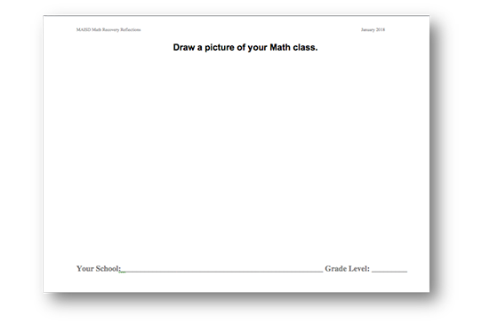

Steps for collecting student drawings
In research, we aim to be consistent in how we collect data and information. Below are a few steps that can help guide teachers to consistently and efficiently collect student classroom drawings. Teachers and researchers have conducted drawing exercises with students ranging from Kindergarten to graduate-level courses, so it may be necessary for you to adapt the directions for your context as needed.
- Schedule about 15 minutes to conduct the drawing exercise with each class. We know some students will complete the activity quickly while others might work on it for much longer. So, depending on your classroom culture, it may be helpful to set a timer for your students or provide students encouragement to use the allotted time effectively.
- Briefly explain to your class they are going to participate in a student drawing activity. You can explain that this is not a graded assignment and students should feel comfortable to respond to the prompt however they wish. They are no right or wrong classroom drawings! If it is helpful, you may wish to introduce the drawing exercise by bringing up the larger context of all the different teaching and learning activities that happen in school. Teachers would then encourage students to imagine themselves in their math class for a few moments before they settle on their idea and begin their drawing. Students should work individually on their drawing so that every student produces their own unique image of math class.
- Print copies of the blank drawing form.
- Decide if you want students to include their names or other identifying features on their drawing. In our research, we typically collect anonymous drawings without student names, but this is the entirely at the discretion of each teacher.

- Write the drawing prompt “Draw a picture of your Math class” on the board for the class and read it aloud. Then, provide each student with a blank drawing form (and pencil). Students can use crayons, markers, or colored pencils if they wish, but pencil-made drawings are most typical and perfectly acceptable. Students may ask about what to draw, so try your best to refer them to the drawing prompt and refrain from suggestions that will influence their drawings or planting any specifics in their heads☺
- If needed during the exercise, students should be encouraged to do their best regardless of their artistic ability. If necessary, please ask students to try and label anything important that are not immediately obvious. Remind students that this is not group work and every student should try and come up with their own personal depiction. Students can be reminded that this activity is not graded and that all artistic abilities are just fine…“stick figures” are perfectly acceptable! Encourage students to use as much of the 15 minutes as possible to complete their drawing.
- Collect the drawing(s) trying not to offer individual commentary or judgment. Kindly thank the students collectively for their participation.
Download these steps for collecting student drawings
Additional Student Drawing Prompts
The above example uses the prompt “Draw a picture of your math class”. Other drawing prompts solicit different images from students, so teachers may wish to customize or try their own prompt. Some prior examples include:
- Think about the teachers and the kinds of things you do in your classrooms. Draw a picture of one of your teachers working in his or her classroom.
- Think about all of the different things you do when you read. Draw a picture of what a camera would see when you are reading.
- Think about the steps you take when writing a paper for school. In the space below, draw a picture or series of pictures that reflect your writing process.
- Think about the teachers and the kinds of things you have done in your class today. Draw a picture of your teacher teaching and yourself learning.
- Draw a picture of yourself taking the big test.
- Think about the math work and activities you do outside of school. Draw a picture of yourself learning math outside of school.
- Think about the work and activities you do in math class. Draw a picture of yourself learning math in school.
Muskegon Area Intermediate School District (MAISD)